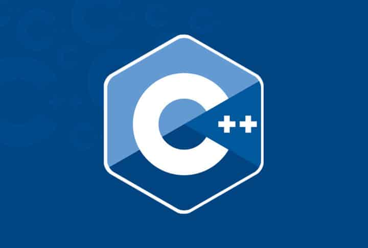

C++ is an Object Oriented Programming Language. One of the best ways of learning C++ is by practicing various examples of it.
This page contains examples on the basic concepts of C++.
C++ is an Object Oriented Programming Language. One of the best ways of learning C++ is by practicing various examples of it.
This page contains examples on the basic concepts of C++.
You will find basic programs in C++ on all important topics.
The if...else statement is used to execute a block of code among two alternatives. Use the " if " statement to specify a block of C++ code to be executed if a condition is true.
There are three forms of if...else statements in C++.
1. if statement
2. if...else statement
3. if...else if...else statement
Use the switch statement to select one of many code blocks to be executed.
The value of the expression is compared with the values of each case.
If there is a match, the associated block of code is executed.
When C++ reaches a break keyword, it breaks out of the switch block.This will stop the execution of more code and case testing inside the block.
In Programming, sometimes there is a need to perform some operation more than once or (say) n number of times. Loops come into use when we need to repeatedly execute a block of statements.
In any programming language, star patterns are widely popular because it helps improve logical thinking and flow control knowledge.
Arrays are used to store multiple values in a single variable, instead of declaring separate variables for each value.
An array is always stored in consecutive memory location.
All elements of an array can be distinguishing with the help of index number
Functions are a powerful tool in C/C++ programming. They allow us to reuse code and reduce repetition.
A function is a block of code which only runs when it is called. You can pass data, known as parameters, into a function.
Structure and union both are user-defined data types in the C/C++ programming language.
Structures and Unions are user-defined data types to store multiple data types used in real-life applications
Class in C++ is the building block that leads to Object-Oriented programming. It is a user-defined data type, which holds its own data members and member functions, which can be accessed and used by creating an instance of that class.
An Object is an instance of a Class. When a class is defined, no memory is allocated but when it is instantiated (i.e. an object is created) memory is allocated.
Constructor and Destructor are the special member functions of the class which are created by the C++ compiler or can be defined by the user.
The capability of a class to derive properties and characteristics from another class is called Inheritance. Inheritance is one of the most important features of Object-Oriented Programming.
The word “polymorphism” means having many forms.
A real-life example of polymorphism is a person who at the same time can have different characteristics. A man at the same time is a father, a husband, and an employee.
Stacks are a type of container adaptors with LIFO(Last In First Out) type of working, where a new element is added at one end (top) and an element is removed from that end only.
Queues are a type of container adaptors that operate in a first in first out (FIFO) type of arrangement. Elements are inserted at the back (end) and are deleted from the front.
Linked List is a linear data structure, in which elements are not stored at a contiguous location, rather they are linked using pointers..